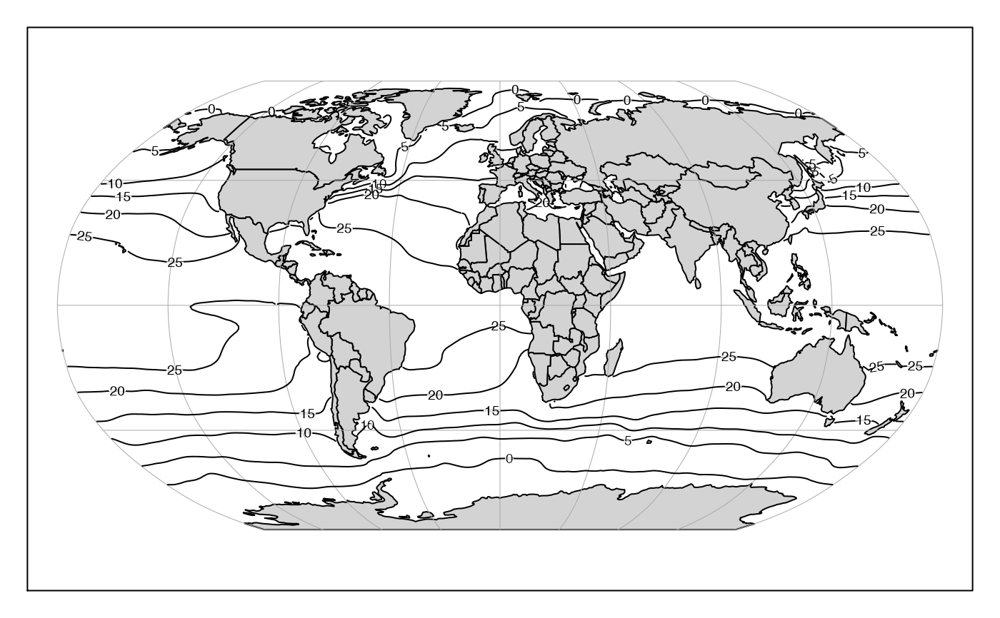

Plot contours on an existing map.
mapContour( longitude, latitude, z, nlevels = 10, levels = pretty(range(z, na.rm = TRUE), nlevels), labcex = 0.6, drawlabels = TRUE, underlay = "erase", col = par("fg"), lty = par("lty"), lwd = par("lwd"), debug = getOption("oceDebug") )
| longitude | numeric vector of longitudes of points to be plotted, or an object of
class |
|---|---|
| latitude | numeric vector of latitudes of points to be plotted. |
| z | matrix to be contoured. The number of rows and columns in |
| nlevels | number of contour levels, if and only if |
| levels | vector of contour levels. |
| labcex |
|
| drawlabels | logical value or vector indicating whether to draw contour
labels. If the length of |
| underlay | character value relating to handling labels. If
this equals |
| col | colour of the contour line, as for |
| lty | type of the contour line, as for |
| lwd | width of the contour line, as for |
| debug | an integer specifying whether debugging information is
to be printed during the processing. This is a general parameter that
is used by many |
Adds contour lines to an existing map, using mapLines().
The ability to label the contours was added in February, 2019, and
how this works may change through the summer months of that year.
Note that label placement in mapContour is handled differently
than in contour().
A map must first have been created with mapPlot().
Other functions related to maps:
formatPosition(),
lonlat2map(),
lonlat2utm(),
map2lonlat(),
mapArrows(),
mapAxis(),
mapCoordinateSystem(),
mapDirectionField(),
mapGrid(),
mapImage(),
mapLines(),
mapLocator(),
mapLongitudeLatitudeXY(),
mapPlot(),
mapPoints(),
mapPolygon(),
mapScalebar(),
mapText(),
mapTissot(),
oceCRS(),
shiftLongitude(),
usrLonLat(),
utm2lonlat()
# \donttest{ library(oce) data(coastlineWorld) if (requireNamespace("ocedata", quietly=TRUE)) { data(levitus, package="ocedata") par(mar=rep(1, 4)) mapPlot(coastlineWorld, projection="+proj=robin", col="lightgray") mapContour(levitus[['longitude']], levitus[['latitude']], levitus[['SST']]) }# }